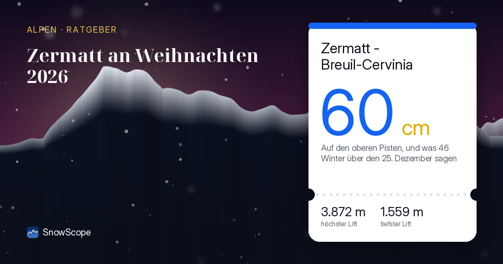

Zermatt an Weihnachten 2026: 60 cm auf den oberen Pisten, und was 46 Winter über den 25. Dezember sagen
Zermatt gehört zu den wenigen Orten der Alpen, an denen Weihnachten ohne Schnee praktisch nicht vorkommt: Auf 2.716 m, etwa auf Höhe von Riffelberg und Schwarzsee, liegen am 25. Dezember üblicherweise 64 cm, und in 70 % von 46 Wintern waren es bis Neujahr mehr als ein halber Meter. Heute, am Samstag 28. November, liegen 60 cm auf den oberen Pisten; normal sind auf 2.716 m Ende November 37 cm.
Die Live-Schneeprognose für Zermatt - Breuil-Cervinia in der SnowScope-AppSchneehöhen, Pulverschnee-Alarme und 3D-Karte, gratis.
Die Lage heute
Die letzte Woche brachte 73 cm Neuschnee auf die oberen Pisten, davon 6 cm am Donnerstag. Seither ist es trocken und kalt, und so bleibt es: bis Dienstag kommen kaum 2 cm dazu, in sieben Tagen etwa 1 cm oben. Für den Schnee ist das kein Problem. Auf dem Theodulgletscher und am Klein Matterhorn wird ohnehin seit Wochen gefahren, und die Kälte hält, was liegt.
Die Frage für die Festtage ist nicht, ob oben Schnee liegt, sondern wie weit hinunter er reicht: Die Talabfahrten nach Zermatt auf {e(z.base, lg)} sind das einzige Stück des Gebiets, das in einem trockenen Dezember von Beschneiung lebt.
| Üblich auf 2.716 m | Schneehöhe |
|---|---|
| 8. Dezember | 47 cm |
| 15. Dezember | 52 cm |
| 24. Dezember | 62 cm |
| 25. Dezember | 64 cm |
| 31. Dezember | 68 cm |
| 6. Januar | 72 cm |
Was 46 Winter über die Festtage sagen
Die Tabelle zeigt den üblichen Verlauf auf 2.716 m: 52 cm Mitte Dezember, 64 cm an Weihnachten, 72 cm am Dreikönigstag. In einem von vier Wintern liegen am 25. Dezember weniger als 47 cm, in einem von vier mehr als 80 cm.
Der schneereichste Winter der Reihe war 2008-09 mit einem Maximum von 206 cm, der ärmste 2022-23 mit 89 cm. Selbst der ärmste Winter hatte an Weihnachten auf dieser Höhe Schnee. Der Höhepunkt kommt in Zermatt spät: Der schneereichste Monat ist der April mit üblicherweise 118 cm, Weihnachten ist hier der Anfang, nicht der Gipfel der Saison.
Welche Sektoren zuerst sicher sind
Von oben nach unten: Das Matterhorn Glacier Paradise bis 3.872 m und der Theodulgletscher sind ganzjährig verschneit. Gornergrat und Rothorn folgen; ihre Hänge oberhalb von 2.716 m sind an Weihnachten so gut wie immer offen. Sunnegga und die Hänge Richtung Findeln liegen tiefer und sonniger, dort entscheidet der Dezember.
Die Verbindung nach Cervinia über den Theodulpass ist bei Wind oder schlechter Sicht geschlossen; an klaren Festtagen ist sie das Highlight des Gebiets. Die Zermatt Schneeseite zeigt täglich die Schneehöhe unten, in der Mitte und oben.
Häufige Fragen
Liegt an Weihnachten im Dorf Schnee? Zermatt selbst liegt auf {e(z.base, lg)}, und ein weißes Dorf an Weihnachten ist die Regel, aber keine Garantie; ein Föhntag kann die Straßen frei räumen.
Reicht der Schnee bis ins Tal? Auf den beschneiten Talabfahrten meist ja. Natürlicher Schnee bis Zermatt ist Ende Dezember normal, aber in einem trockenen Jahr dünn.
Ist dieser Winter gut gestartet? Oben ja: 60 cm Ende November sind mehr als die üblichen 37 cm auf 2.716 m. Was im Dezember dazukommt, entscheidet über Sunnegga und die Talabfahrten.
Der Blick auf den ganzen Winter
Zermatts Reihe zeigt, warum die Festtage hier so verlässlich sind: Ein magerer 25. Dezember, einer von zehn, hat auf 2.716 m noch 37 cm, ein reicher 94 cm. Im Februar liegen üblicherweise 97 cm, in einem reichen Februar 115 cm. Die Saison mit mehr als 30 cm dauert hier im Schnitt vom 15. November bis in den Juni.
Die Zahlen des Tages: 60 cm auf den oberen Pisten, 73 cm in sieben Tagen, 1 cm in den nächsten sieben oben und 1 cm im Dorf.
Tipps für Skifahrer
- Für die Weihnachtswoche in Zermatt buchen, ohne auf den Dezember zu warten: Die Gletscherhänge sind sicher, und die Betten im Dorf sind früh weg.
- An klaren Tagen zuerst nach Cervinia, am Nachmittag zurück über den Theodulpass; an trüben Tagen Gornergrat und Rothorn.
- Andere Schweizer Gebiete im Vergleich auf der Seite Schweiz und im Alpen-Schneehub.
- Reisedaten planen mit dem Skireise-Planer.
Zu diesen Zahlen
Schneewerte: die SnowScope-Schneekarte und -Vorhersage von heute und unsere Bilanz von 46 vergangenen Wintern pro Skigebiet (eine Schätzung für die Fläche, keine Meldung des Skigebiets).
Offizielle Lawinenlageberichte: SLF – WSL Institute for Snow and Avalanche Research
Diesen Bericht zitieren
Für Forschung, Lehre oder Presse: Zahlen und Grafiken sind unter CC BY 4.0 mit dieser Quellenangabe frei nutzbar.
SnowScope (2026), Zermatt an Weihnachten 2026: 60 cm auf den oberen Pisten, und was 46 Winter über den 25. Dezember sagen, https://snowscope.app/blog/de/2026/11/zermatt-weihnachten-2026-schnee-chancen-matterhorn-gletscher-46-winter.html, abgerufen am 2026-11-28
SnowScope (Atlas Labs). (2026, November 28). Zermatt an Weihnachten 2026: 60 cm auf den oberen Pisten, und was 46 Winter über den 25. Dezember sagen. SnowScope snow reports. https://snowscope.app/blog/de/2026/11/zermatt-weihnachten-2026-schnee-chancen-matterhorn-gletscher-46-winter.html
BibTeX
@misc{snowscope2026zermattweihnachten2026sc,
author = {{SnowScope (Atlas Labs)}},
title = {Zermatt an Weihnachten 2026: 60 cm auf den oberen Pisten, und was 46 Winter über den 25. Dezember sagen},
year = {2026},
month = nov,
howpublished = {\url{https://snowscope.app/blog/de/2026/11/zermatt-weihnachten-2026-schnee-chancen-matterhorn-gletscher-46-winter.html}},
note = {Published 2026-11-28 13:24 UTC; accessed 2026-11-28}
}· CC BY 4.0 · Methoden, Daten und Werkzeuge →
Zermatt - Breuil-Cervinia: Schnee und Temperatur nach Höhe, dieser Winter vs letzter (Werkzeuge) →
Zermatt - Breuil-Cervinia folgen
Gratis: eine Nachricht, wenn Neuschnee kommt, und jeden Morgen die Vorhersage.